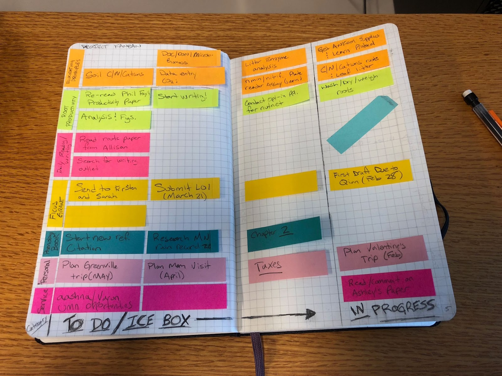
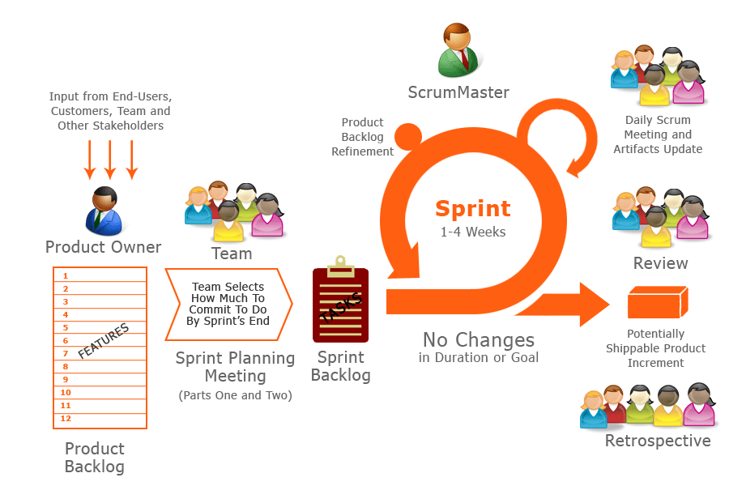

I earned a PhD in Biology from West Virginia University and an MS in Analytics from The Georgia Institute of Technology (Georgia Tech). Working as a research and data scientist in both academia and industry, I led continental-scale research projects, won multiple funding awards, and published more than 15 peer-reviewed research papers.
Over the course of my career, I trained in Lean Six Sigma and Agile/Scrum methodologies for continuous improvement and project management.
I am considered an expert in biology, data science, and management.
I began consulting in 2022 after receiving requests for data and management help from colleagues and friends.
Throughout high school and undergrad I tried managing my life using a paper planner. But even with a planner, some tasks slipped through the crack and I did most of my work at the last minute. These problems led to constant stress and anxiety in my life.
When I started graduate school, I had to make a change. I began learning about personal productivity and created my first kanban board. Using a kanban board immediately increased my efficiency and started to reduce my work anxiety.

In my third year of graduate school, I was introduced to Getting Things Done by David Allen. I think back on this time in my life as a turning point, because Getting Things Done introduced me to a whole-life system that allowed me to move everything from my brain into a “trusted system”.
After implementing Getting Things Done, my stress and anxiety hit an all-time low, and my effectiveness reached an all-time high. As a result, I finished graduate school as the most published student in the 100+ year history of the department - then moved on to work with a member of the US National Academy of Sciences.
I was able to achieve these things because of my productivity system. Over the years, I have modified it to suit my needs and the requirements of a digital world. Now I implement key productivity research breakthroughs like energy management, focus time, and essentialism.
A big oversight in academia is that project management is never taught. At each level, from undergraduate to professor, academics are left on their own to figure out how to manage their teams. As you might imagine, this deficit in management skills severely limits the effectiveness of academic teams.
I was extremely unprepared to manage my postdoctoral research project - a collaborative effort that included nine research sites across America, working with 14 Scientists and over 30 staff members across three laboratories. I was drowning, and consulting with advisors and team members didn’t provide any solutions. At that point I found a mentor outside of academia to learn effective project management.
I was surprised to learn there were common project management methods like Scrum and Agile being used in industries across the globe. Implementing Scrum in my postdoctoral research immediately empowered me to own the planning, vision, and outcomes of the project. It was a return to command.

Since that first Scrum meeting, I have trained in project and operations management to continuously improve the work process and effectiveness of my teams. And when I coach managers, the first thing I do is work with them to regain their command of their projects by employing these methods.
My training and research in productivity and management has allowed me to build systems based on multiple, tested methods. For example, my productivity system is based on a collection of ideas from more than 30 different individual systems, ideas, and tools.
In short, I have done the research, implementation, and testing of the best ideas from over 70 years of productivity and management science. I have distilled all of this work into practical systems and tools for you to use and thrive with.
If your desire is to achieve more on your own or with your team, contact me today for a free consultation.